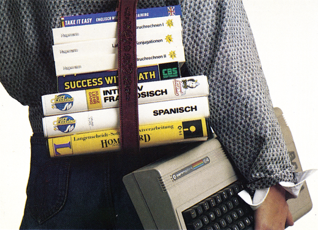
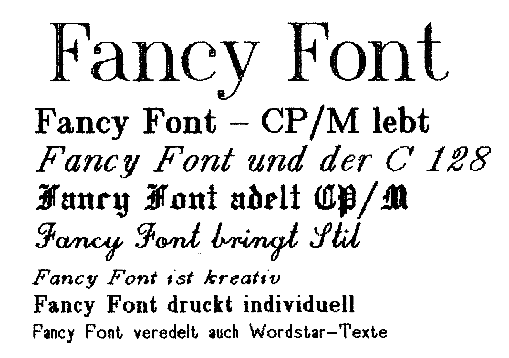
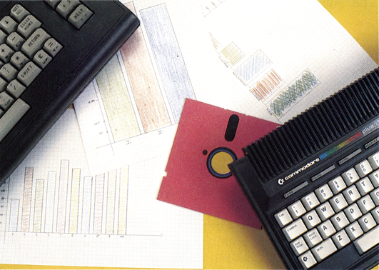

Vorschau
Copyright
Was ist eigentlich Computer-Kriminalität? Was muß man beim Kopieren von Programmen beachten, oder darf man überhaupt Programme anderer Leute kopieren? Was ist ein Copyright, und wie bekommt man es? Diese und ähnliche Fragen wollen wir für Sie in der nächsten Ausgabe des 64'er-Magazins erläutern. Wir erklären wichtige Fachbegriffe und teilen Ihnen mit, wie der rechtliche Schutz von Software und Software-Anwendern heutzutage aussieht, und was bei der Erstellung und Anwendung von Programmen alles zu beachten ist.
Spiele-Teil für C 16 und Plus/4
In der nächsten Ausgabe kommen die Spielefans unter den C 16- und Plus/4-Besitzern voll auf ihre Kosten. Unser bewährtes Testteam wühlte sich durch das Programmangebot und entdeckte heiße Titel. Vom starken 10-Mark-Spiel für den C 16 bis hin zur Plus/4-Version des Klassikers »Mercenary« wird einiges geboten. Wer sich für C 16-Spiele interessiert, sollte sich die nächste Ausgabe deshalb auf keinen Fall entgehen lassen.
Kurvendiskussion ohne Probleme
Haben Sie Schwierigkeiten bei Kurvendiskussionen oder bei der Differenzierung von mathematischen Funktionen? Das ist bald vorbei, denn als Anwendung des Monats finden Sie in der nächsten Ausgabe ein Programm, das dies für Sie erledigt. Mit einem Tastendruck erhalten Sie auf dem Bildschirm oder schriftlich die Grundfunktion mit erster und zweiter Ableitung! Aber das ist nur eine von vielen Möglichkeiten.
Der Computer hilft lernen
Der Computer wird auch als Lernhilfe immer interessanter. Wenn Sie anfangen, sich für Lernprogramme zu interessieren, finden Sie im Einsteigerteil der nächsten Ausgabe ausführliche Kriterien für den Kauf von Lernsoftware. Natürlich halten wir Sie auch über die Neuigkeiten auf diesem Software-Markt auf dem Laufenden. Interessante Programme haben wir für Sie getestet.

CP/M wird zur Druckerei!
Jetzt ist endgültig Schluß mit dem etwas eintönigen Aussehen Ihrer Wordstar-Texte. Mit Fancy Font können Sie Ihren eigenen Zeichensatz entwickeln und so Ihrer Fantasie freien Lauf lassen. Ob Sie nun mit Schönschrift oder altdeutschen Zeichen drucken wollen, Fancy Font unterstützt Sie nach Kräften. Einen Testbericht zu dieser Spitzensoftware finden Sie in der nächsten Ausgabe.

C 16 & Plus/4
In der nächsten Ausgabe dreht sich alles um den C 16 und den Plus/4. Durch die Preispolitik von Commodore sind diese Computer ein heißer Tip für alle Einsteiger, die für wenig Geld zu einer Computeranlage kommen wollen. Wir sagen Ihnen, was es an Hard- und Software zum C 16 und Plus/4 gibt. Weiterhin gibt es einen Vergleich der beiden Datasetten und der Diskettenlaufwerke 1541 und 1551.

Trickfilm mit dem C 64
Der HiRes-Converter setzt hochauflösende Grafiken in Blockzeichensatz um, wahlweise mit einer Auflösung von 80 x 50 oder 80 x 100 Punkten. Somit paßt eine »8-KByte-Grafik« in 1 KByte. Bis zu 61 (bei 80 x 50) beziehungsweise 47 (bei 80 x 100) dieser Bilder können zu einer Diashow oder einen Film, der dann mit bis zu 14 Bildern pro Sekunde abgespielt werden kann, zusammen gefaßt werden. Die Effekte, die sich mit dem HiRes-Computer erzielen lassen, zeigen deutlich, was alles im C 64 steckt. In der 80 x 100-Auflösung können Sie Sequenzen auch beliebig zusammenstellen. Lassen Sie sich von unserem Listing des Monats verzaubern.